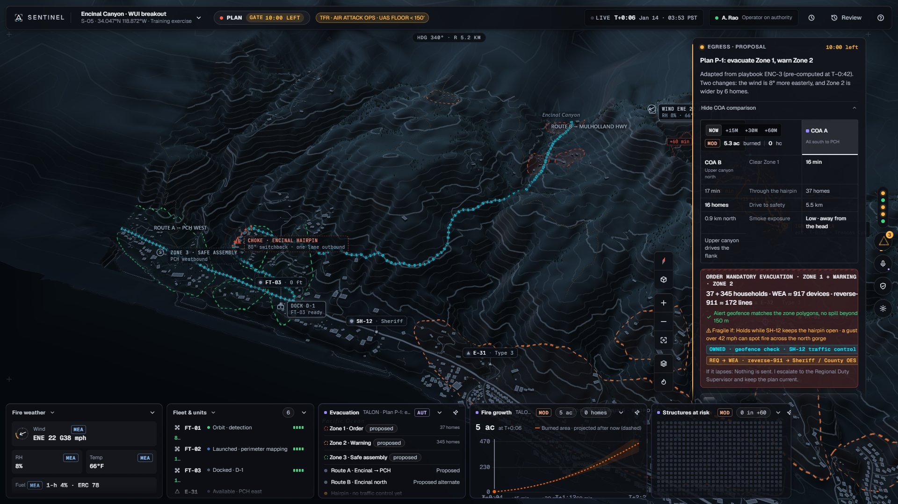
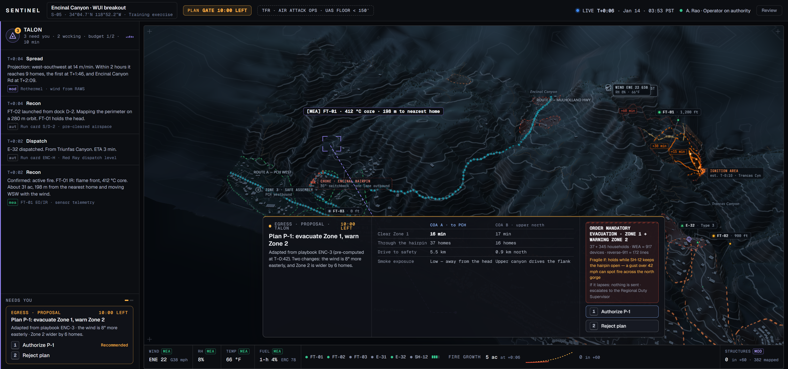
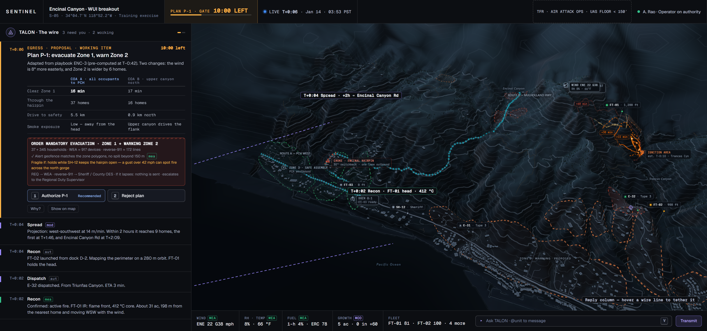
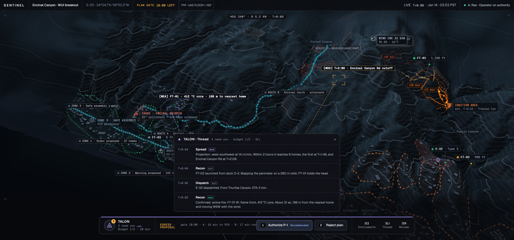

All four at 1920×1080, same scenario beat, same tokens. Verdict up front: the canvas shell wins — the value to take from A/B/C is a handful of small transplants, listed in the adoption table below.




| What | From | Where it plugs in | Value · cost · risk | Take? |
|---|---|---|---|---|
| Decision-surface hierarchy — the card that needs a hand gets its own treatment (amber top edge, stronger rim, calmer chrome on everything else) | auditA | Sheet 04 · .card surface tokens (Tier 3: one --card-needs-edge) — a token + two rules, geometry untouched | Kills the "five identical boxes" critique at its root · ~1h · zero guard risk | YES — first |
| Gate progress bar — a 2–3px depleting bar under the topbar chip and in the card meta | B | Sheet 02 .gate-chip + card meta .countdown — the countdown already ticks, add the fill | Time pressure becomes peripheral · ~1h · watch V2 topbar bounds | YES |
| T+ stamp on the card meta — "T+0:06 · Egress · Proposal" | B | Card meta template — ps.t is already in scope | Binds card ↔ timeline marks · minutes · zero risk | YES |
| TALON breathing edge — the rail orb strokes violet when needs-you > 0 | A | Sheet 05 .rail .rbtn.face — one box-shadow token, reuse the mic breathe idiom | Presence without a seat · ~30min · red-discipline-safe (violet) | YES |
| Dock as a bezel strip — widgets attach flush to the bottom frame, hairline top edge, corner ticks | A | Sheet 03 .dock/.widget surface — radii top-only, flush bottom | Strongest anti-sameness move · ~2h · visual identity change — the mockups and case study stills show floating cards | ASK OWNER |
| Kind-coded margin tabs in the thread — 2px left tabs per entry kind | B | Sheet 05 thread entries — tiny | Scannability · minutes · zero risk | ASK OWNER |
| Seat column · wire spine · command-only bar · full bezel conversion | ABC | — | Break map primacy, guarded anchors, or the case study's hero — the exploration proved their pieces, not their wholes | NO |